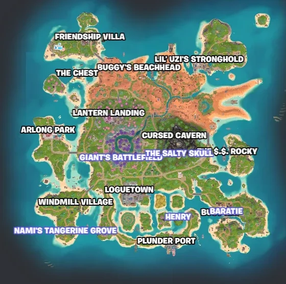

Tu caza del tesoro pirata
Tesoros que han salido en tus repeticiones, cuáles son tuyos y qué premios se han podido identificar. Todo calculado en local.
Añadir repeticiones
Los tienes en %LOCALAPPDATA%\FortniteGame\Saved\Demos. Cada repetición tarda un rato en procesarse: deja la pestaña abierta.
Mis cofres
0Elegir qué contar
Marca las opciones que quieras sumar.
Tesoros frente a cofres
—Analiza tus repeticiones para calcular la tasa real.
Avisos del analizador
0Cofres y tesoros
Cada apertura detectada en tus repeticiones, con tiempo, contenedor y confianza de detección.
Eventos detectados
| Partida | Tiempo | Contenedor | Jugador | Conf. | X | Y | Zona |
|---|
Sin cofres registrados todavía.
Los cofres dorados del evento aparecen como «Cofre dorado (tesoro)»: se detectan por su grupo replicado, con hora, si concedió premio y el id del pawn que lo abrió. El identificador exacto del premio (coche, música, mochila…) todavía no se resuelve porque la tabla de campos del juego duplica ese nombre.
Cómo se clasifica
- A El premio del cofre coincide con el identificador del Token.
- B Cofre con estado de apertura y pickup asociado al evento.
- C Apertura detectada sin identificar el premio.
Premios y probabilidades
Ordenados de más a menos probable por cofre abierto. Las tasas son referencia del evento, no un cálculo de tus repeticiones.
Contadores
Tesoros que te han salido
0Premios concedidos en tus repeticiones. Solo el cofre dorado replica qué premio lleva; cuando la concesión llega por la habilidad del evento, la repetición trae quién lo recibió y en qué momento, no el premio.
Todavía no hay ningún tesoro en tus repeticiones.
Fuente de las tasas: fortnite.bot/treasure. Los contadores de tu cuenta se basan solo en las repeticiones analizadas.
Partidas
Una entrada por archivo de repetición analizado, con los tesoros que salieron en cada una.
Sin partidas analizadas todavía.
Zonas
Densidad de cofres y de tesoros sobre el mapa, y las zonas donde más salen.
Densidad de cofres

Sin coordenadas registradas todavía.
Configuración
En la web todo se guarda en el almacenamiento del navegador; el exe local lo guarda en data/config.json.
Datos de este navegador
Las repeticiones analizadas y sus resultados viven en IndexedDB, dentro de este equipo. Borrar los datos del navegador también los elimina.
Rutas de salida
Guía rápida
De cero a datos en cuatro pasos, sin instalar nada.
-
Activa las repeticiones en Fortnite
Ajustes → Juego → Repeticiones → Grabar repeticiones. Fortnite guarda un archivo por partida al terminar y solo entonces escribe la clave que permite leerlo.
-
Encuentra los archivos
Están en
%LOCALAPPDATA%\FortniteGame\Saved\Demos. Fortnite borra los antiguos, así que copia los que quieras conservar. -
Suéltalos en la web
Arrastra uno o varios
.replaya «Añadir repeticiones». Se leen con el motor compilado a WebAssembly dentro de esta pestaña: el archivo no viaja a ningún servidor y el resultado se queda en tu navegador. -
Lee los resultados
Resumen para los totales, Premios para los contadores y las probabilidades, Cofres para el detalle, Zonas para el mapa de calor y Partidas para el histórico. Puedes borrarlo todo con «Borrar mis datos» en Configuración.
Modo local (TokenTracker.exe)
Estás viendo el panel servido por el programa de escritorio, así que no hace falta subir archivos: se analizan directamente de la carpeta de repeticiones.
- Analizar ahora procesa la carpeta configurada y guarda el resultado en
data/. - Por consola:
TokenTracker analyze --limit 5. La caché evita repetir trabajo. - La configuración de carpeta, puerto y exportación está en la pestaña Configuración.
Problemas frecuentes
- La carpeta aparece vacía
- Fortnite borra repeticiones antiguas. Activa la grabación y juega una partida completa.
- Una partida no se puede leer
- Si la partida no terminó, el archivo no tiene clave de cifrado. El analizador lo marca como error y sigue con el resto.
- No aparecen Tokens
- El Tokens se identifica por el premio del cofre. Si tu versión del juego usa un identificador nuevo, la apertura se cuenta con confianza C y queda listada para revisión.
- Los nombres no coinciden con el juego
- Desactiva la anonimización en Configuración para ver los nombres tal cual los replica la repetición.